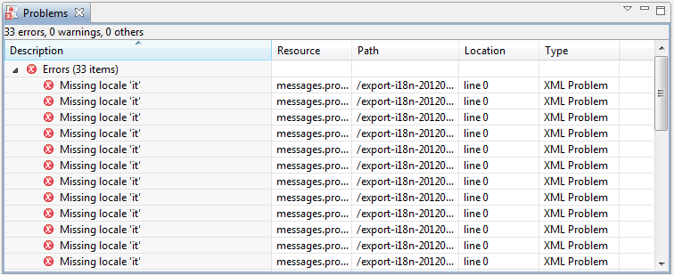

Getting Started in 5 mn
- Open a project using File -> Open...
- Select the directory where are located the messages to translate (if it is a zip, unzip it before)
- Check the Problems View at the bottom right of the tool to see if there is any errors, for example:

See Reference Guide for more informations about problems.